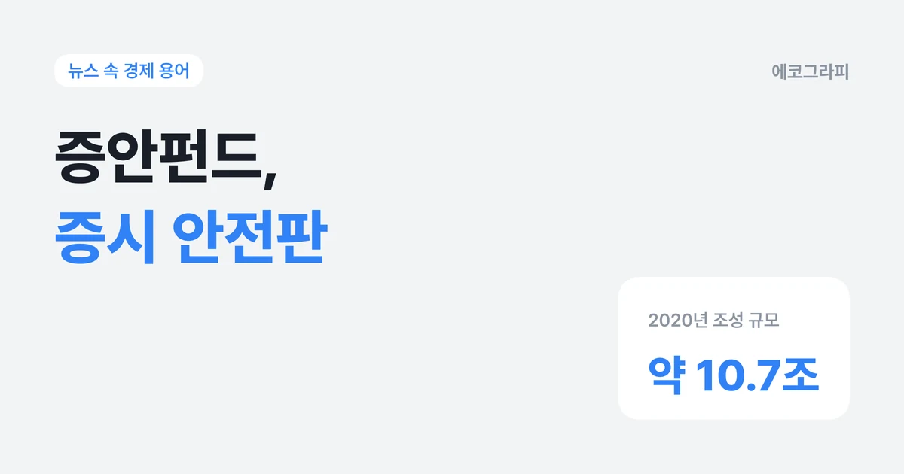
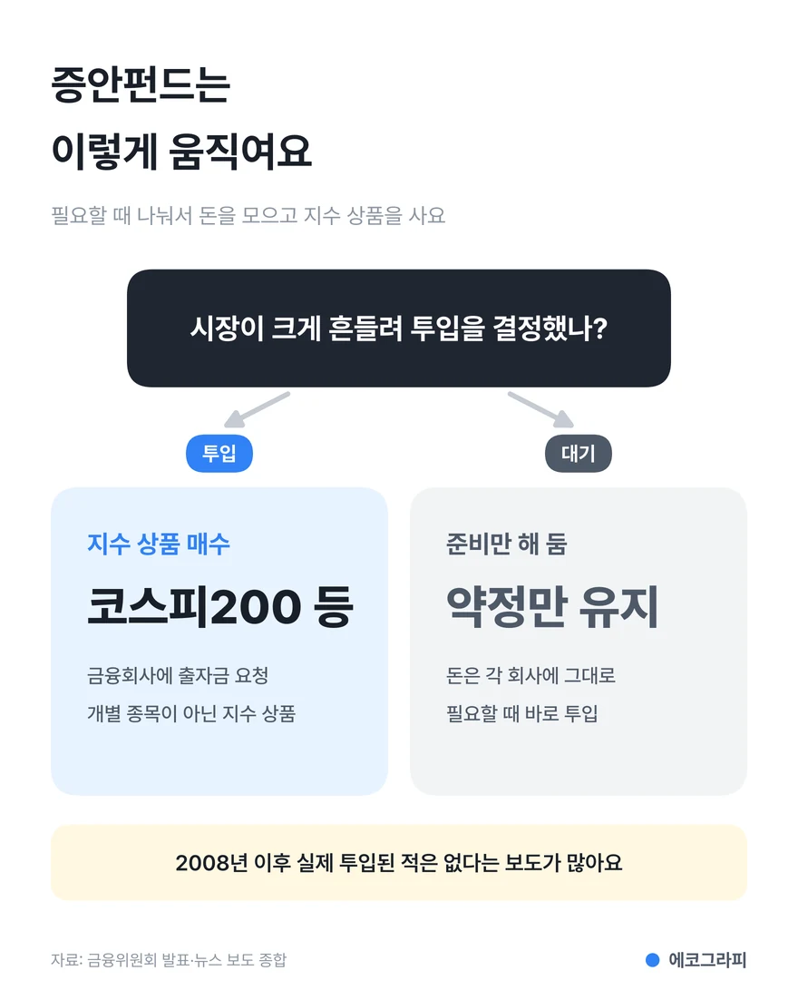
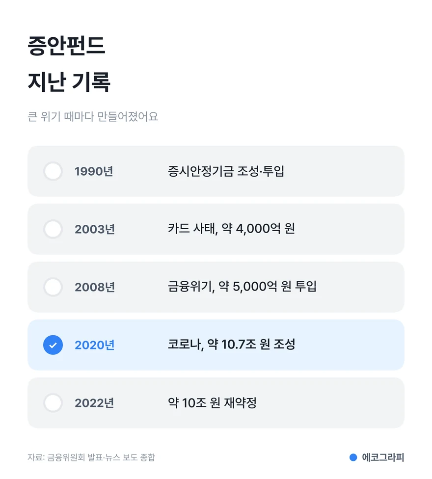
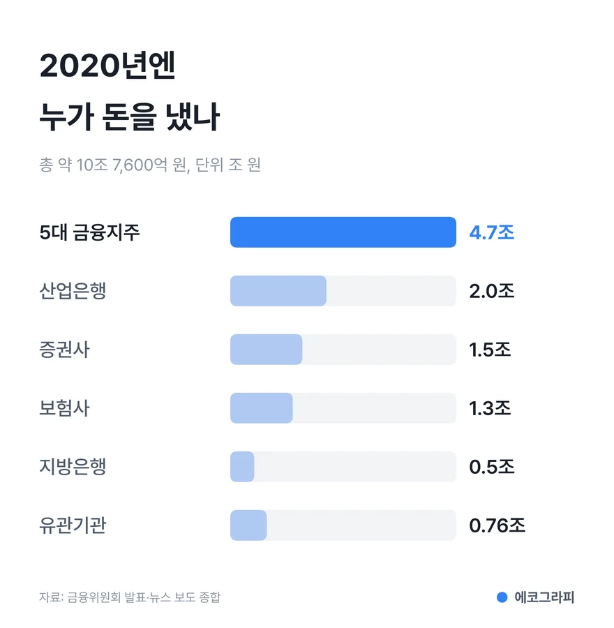
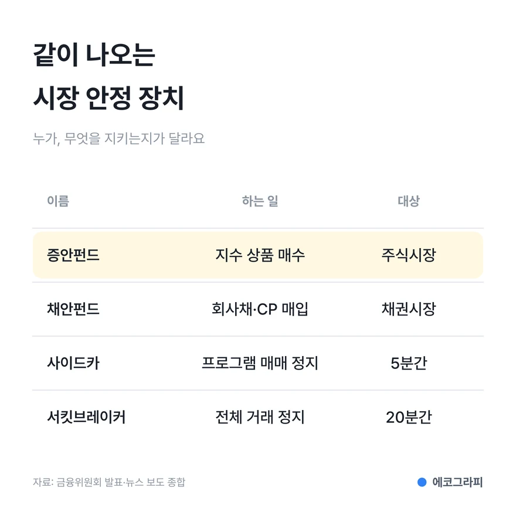

지난 금요일 코스피가 5% 넘게 빠지자, 22일(일) 정부·한국은행·금융위원회·금융감독원 수장들이 긴급 회의를 열었어요. 여기서 나온 말이 "시장 상황에 따라 증안펀드를 바로 가동할 수 있도록 준비 작업에 즉시 착수"예요. 이번 주 증시 일정과 다른 대책은 오늘 아침 시황에 정리했어요.
증권시장안정펀드(증안펀드): 주가가 공포 때문에 지나치게 떨어질 때, 은행·증권·보험사와 거래소 같은 유관기관이 함께 돈을 모아 시장 전체를 대표하는 지수 상품을 사는 펀드예요.
핵심은 두 가지예요. 첫째, 돈을 한 번에 다 모아 두지 않고 약정만 해 두었다가 필요할 때 나눠서 걷어요(캐피털콜 방식). 둘째, 특정 회사를 돕지 않도록 개별 종목이 아닌 코스피200 같은 지수 상품을 사요.

증안펀드는 큰 위기 때마다 등장했어요. 1990년 증시 폭락 때 증시안정기금이 투입됐고, 2003년 카드 사태, 2008년 글로벌 금융위기 때도 만들어졌어요. 2008년엔 약 5,000억 원이 실제로 투입됐다고 알려져 있어요.

2020년 코로나 때는 역대 최대인 약 10조 7,600억 원 규모로 만들어졌어요. 5대 금융지주가 4조 7,000억 원, 산업은행이 2조 원, 증권·보험·지방은행과 유관기관이 나머지를 냈어요. 하지만 곧 증시가 반등하면서 실제로 투입되지는 않았다는 평가가 많아요. 2022년에도 약 10조 원 규모로 다시 약정했지만 역시 쓰이지 않았어요.

기억할 것: 뉴스에서 '증안펀드 준비'와 '증안펀드 투입'은 다른 말이에요. 준비는 '필요하면 쓴다', 투입은 '실제로 산다'예요. 어느 쪽이든 내 계좌의 비중과 빌린 돈부터 확인하는 게 먼저예요.

채안펀드(채권시장안정펀드)는 회사채나 기업어음(CP) 시장이 얼어붙을 때 채권을 사 주는 펀드예요. 사이드카와 서킷브레이커는 돈을 넣는 게 아니라 거래를 잠깐 멈추는 장치예요. 지난 금요일엔 코스피·코스닥 모두 매도 사이드카가 나왔어요.
아니에요. 은행·증권·보험사 같은 금융회사와 거래소 등 유관기관이 출자해요. 2020년엔 정책금융기관인 산업은행도 2조 원을 냈어요.
원칙적으로 사지 않아요. 특정 회사를 도와주는 일이 되지 않도록 코스피200처럼 시장 전체를 대표하는 지수 상품을 사요.
꼭 그렇지는 않아요. 규모가 시장 전체에 비하면 작아서, 급하게 떨어지는 속도를 늦추는 정도로 보는 경우가 많아요.
정해진 날짜는 없어요. 22일 발표는 '시장 상황에 따라 바로 가동할 수 있도록 준비한다'는 내용이었고, 투입 여부는 앞으로의 시장 흐름에 달려 있어요.
※ 2026년 11월 기준으로 정리한 글입니다. 세율·제도는 바뀔 수 있으니 거래 전 증권사·국세청 안내를 한 번 더 확인하세요. 특정 종목·상품의 매수·매도 권유가 아닙니다.